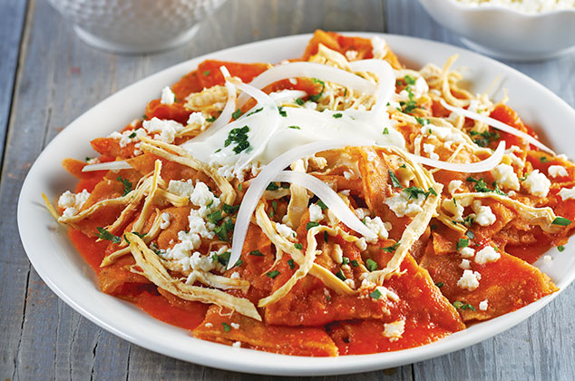

PLATILLOS FUERTES
Chilaquiles

Espectativa
Ingredientes:
- 4 jitomates
- 2 Chiles serranos
- 1/4 Cebolla
- 2 dientes Ajos
- 1/2 taza Agua
- 1 rama Epazote
- 1 cucharada Aceite de Oliva
- 1 pechuga de Pollo cocida y deshebrada
- 1 taza Crema
- 200 g Queso Fresco desmoronado
- 1/2 Cebolla en juliana
- 2 cucharadas Cilantro picado
Pasos:
- Licúa:
Para la salsa, licúa los chiles de árbol con la cebolla, jitomate, el agua y el Concentrado de Tomate con Pollo CONSOMATE®. - Freir:
En una sartén calienta el aceite y fríe la salsa por 5 minutos o hasta que espese un poco, agrega los totopos a la salsa y mezcla bien. - Presentación:
Sirve en un plato, decora con Media Crema NESTLÉ® y el queso panela. Ofrece.
Consejo culinario: Puedes agregar puré de tomate para dar un color rojo uniforme en la salsa.
Consejo nutricional: Sirve porciones pequeñas en su plato, si tu hijo se queda con hambre él pedirá más comida.


Este es un sitio de recetas rápidas que puedes hacer facilmente para una reunión, sorpresa, algo casual o simplemente para ti.